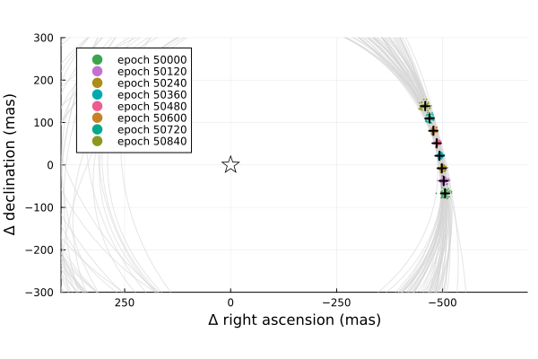

Posterior Predictive Checks
A posterior predictive check compares our true data with simulated data drawn from the posterior. This allows us to evaluate if the model is able to reproduce our observations appropriately. Samples drawn from the posterior predictive distribution should match the locations of the original data.
To demonstrate, we will fit a model to relative astrometry data:
using Octofitter
using Plots:Plots
using Distributions
astrom_like = PlanetRelAstromLikelihood(Table(;
epoch= [50000,50120,50240,50360,50480,50600,50720,50840,],
ra = [-505.764,-502.57,-498.209,-492.678,-485.977,-478.11,-469.08,-458.896,],
dec = [-66.9298,-37.4722,-7.92755,21.6356, 51.1472, 80.5359, 109.729, 138.651,],
σ_ra = fill(10.0, 8),
σ_dec = fill(10.0, 8),
cor = fill(0.0, 8)
))
@planet b Visual{KepOrbit} begin
a ~ truncated(Normal(10, 4), lower=0, upper=100)
e ~ Uniform(0.0, 0.5)
i ~ Sine()
ω ~ UniformCircular()
Ω ~ UniformCircular()
θ ~ UniformCircular()
tp = θ_at_epoch_to_tperi(system,b,50420) # reference epoch for θ. Choose an MJD date near your data.
end astrom_like
@system Tutoria begin
M ~ truncated(Normal(1.2, 0.1), lower=0)
plx ~ truncated(Normal(50.0, 0.02), lower=0)
end b
model = Octofitter.LogDensityModel(Tutoria)
using Random
Random.seed!(0)
chain = octofit(model)Chains MCMC chain (1000×28×1 Array{Float64, 3}):
Iterations = 1:1:1000
Number of chains = 1
Samples per chain = 1000
Wall duration = 7.41 seconds
Compute duration = 7.41 seconds
parameters = M, plx, b_a, b_e, b_i, b_ωy, b_ωx, b_Ωy, b_Ωx, b_θy, b_θx, b_ω, b_Ω, b_θ, b_tp
internals = n_steps, is_accept, acceptance_rate, hamiltonian_energy, hamiltonian_energy_error, max_hamiltonian_energy_error, tree_depth, numerical_error, step_size, nom_step_size, is_adapt, loglike, logpost, tree_depth, numerical_error
Summary Statistics
parameters mean std mcse ess_bulk ess_tail rh ⋯
Symbol Float64 Float64 Float64 Float64 Float64 Float ⋯
M 1.1825 0.0914 0.0037 620.4311 718.9469 0.99 ⋯
plx 50.0005 0.0207 0.0007 964.2289 507.7936 1.00 ⋯
b_a 11.7232 2.3283 0.1613 188.8666 201.4632 1.00 ⋯
b_e 0.1586 0.1104 0.0064 275.8192 322.7371 1.00 ⋯
b_i 0.6276 0.1690 0.0154 170.2281 88.7256 1.01 ⋯
b_ωy -0.0442 0.7271 0.0603 180.2772 699.6500 1.00 ⋯
b_ωx -0.0559 0.6845 0.0483 221.3970 527.9050 1.00 ⋯
b_Ωy 0.0292 0.7516 0.2224 13.5866 235.3903 1.12 ⋯
b_Ωx 0.1335 0.6475 0.1346 37.7532 288.4497 1.06 ⋯
b_θy 0.0745 0.0074 0.0002 950.5494 656.9515 1.00 ⋯
b_θx -0.9983 0.0196 0.0007 868.4106 787.3716 0.99 ⋯
b_ω -0.2312 1.8672 0.1102 371.1050 582.2916 1.00 ⋯
b_Ω -0.2473 1.7973 0.2723 96.8319 294.6374 1.12 ⋯
b_θ -1.4963 0.0073 0.0002 976.0577 573.5727 1.00 ⋯
b_tp 42618.1045 5088.1735 348.7236 213.5447 351.9726 1.00 ⋯
2 columns omitted
Quantiles
parameters 2.5% 25.0% 50.0% 75.0% 97.5%
Symbol Float64 Float64 Float64 Float64 Float64
M 1.0122 1.1194 1.1792 1.2463 1.3512
plx 49.9577 49.9877 50.0011 50.0141 50.0412
b_a 8.1983 10.0823 11.3469 12.9127 17.3812
b_e 0.0073 0.0668 0.1415 0.2331 0.3958
b_i 0.2031 0.5386 0.6445 0.7369 0.9068
b_ωy -0.9972 -0.7961 -0.0833 0.6816 1.0046
b_ωx -0.9915 -0.7077 -0.0881 0.5917 0.9979
b_Ωy -0.9932 -0.7844 0.0893 0.8336 1.0045
b_Ωx -0.9831 -0.4143 0.2179 0.7470 1.0033
b_θy 0.0602 0.0697 0.0746 0.0791 0.0897
b_θx -1.0380 -1.0115 -0.9973 -0.9853 -0.9599
b_ω -2.9591 -2.0461 -0.1626 1.2213 3.0619
b_Ω -2.9825 -2.2465 0.2793 1.1165 2.8028
b_θ -1.5113 -1.5009 -1.4960 -1.4916 -1.4817
b_tp 30545.4471 39822.1986 43534.8683 46223.4592 49986.2907
We now have our posterior as approximated by the MCMC chain. Convert these posterior samples into orbit objects:
# Instead of creating orbit objects for all rows in the chain, just pick
# every twentieth row.
ii = 1:20:1000
orbits = Octofitter.construct_elements(chain, :b, ii)50-element Vector{Visual{KepOrbit{Float64}, Float64}}:
Visual{KepOrbit{Float64}, Float64}(KepOrbit(11.3, 0.00732, 0.643, 1.07, 3.93, 37500.0, 1.12), 49.98929244481803, 4.126183626777494e6)
Visual{KepOrbit{Float64}, Float64}(KepOrbit(11.4, 0.208, 0.639, -2.49, 3.15, 41300.0, 1.23), 50.00501224460119, 4.1248865011980766e6)
Visual{KepOrbit{Float64}, Float64}(KepOrbit(11.0, 0.227, 0.607, 1.21, 4.94, 39900.0, 1.13), 50.01485264048075, 4.1240749319544e6)
Visual{KepOrbit{Float64}, Float64}(KepOrbit(15.4, 0.328, 0.735, 0.0126, 4.2, 49200.0, 1.13), 50.03727098701878, 4.1222272104630074e6)
Visual{KepOrbit{Float64}, Float64}(KepOrbit(8.19, 0.25, 0.342, 3.05, 4.48, 45700.0, 1.2), 49.99683884192731, 4.125560830998506e6)
Visual{KepOrbit{Float64}, Float64}(KepOrbit(10.8, 0.0824, 0.701, 2.2, 1.08, 47700.0, 1.27), 50.027349058702214, 4.123044772129903e6)
Visual{KepOrbit{Float64}, Float64}(KepOrbit(9.84, 0.32, 0.713, 1.26, 0.264, 44600.0, 1.14), 49.9773347874657, 4.127170864096002e6)
Visual{KepOrbit{Float64}, Float64}(KepOrbit(10.3, 0.115, 0.698, 1.59, 0.959, 46700.0, 1.29), 49.98033419059438, 4.126923185696031e6)
Visual{KepOrbit{Float64}, Float64}(KepOrbit(13.5, 0.0382, 0.812, -1.76, 3.39, 42300.0, 1.3), 49.996007902996475, 4.1256293982551685e6)
Visual{KepOrbit{Float64}, Float64}(KepOrbit(9.33, 0.0885, 0.606, 2.62, 4.6, 44100.0, 1.11), 50.000794099444576, 4.1252344830717654e6)
⋮
Visual{KepOrbit{Float64}, Float64}(KepOrbit(12.2, 0.348, 0.536, -2.58, 2.69, 38100.0, 1.15), 49.9956038986534, 4.1256627366302423e6)
Visual{KepOrbit{Float64}, Float64}(KepOrbit(9.35, 0.231, 0.569, -2.02, 3.55, 45500.0, 1.33), 50.01170361678157, 4.124334607365529e6)
Visual{KepOrbit{Float64}, Float64}(KepOrbit(11.6, 0.001, 0.604, 1.32, 0.535, 43700.0, 1.07), 49.989118161907285, 4.126198012374182e6)
Visual{KepOrbit{Float64}, Float64}(KepOrbit(9.85, 0.0804, 0.317, 0.442, 0.471, 43500.0, 1.09), 50.0032146401567, 4.1250347899503293e6)
Visual{KepOrbit{Float64}, Float64}(KepOrbit(11.0, 0.00274, 0.554, 0.261, 0.594, 42500.0, 1.17), 50.03307742573734, 4.122572718141378e6)
Visual{KepOrbit{Float64}, Float64}(KepOrbit(14.4, 0.14, 0.732, -0.401, 0.0335, 32800.0, 0.943), 50.0350528775601, 4.1224099533730377e6)
Visual{KepOrbit{Float64}, Float64}(KepOrbit(13.7, 0.0942, 0.801, 0.262, 0.204, 38200.0, 1.2), 49.976691584692524, 4.1272239810123285e6)
Visual{KepOrbit{Float64}, Float64}(KepOrbit(13.3, 0.178, 0.827, 2.55, 0.574, 46800.0, 1.24), 49.99062428351105, 4.1260736979440884e6)
Visual{KepOrbit{Float64}, Float64}(KepOrbit(9.72, 0.0079, 0.572, 2.78, 4.61, 44400.0, 1.17), 50.00625640202485, 4.124783873876388e6)Calculate and plot the location the planet would be at each observation epoch:
epochs = astrom_like.table.epoch' # transpose
x = raoff.(orbits, epochs)
y = decoff.(orbits, epochs)
Plots.plot(orbits, kind=(:raoff, :decoff), color=:lightgrey)
Plots.scatter!(
x, y,
lims=:symmetric,
markerstrokewidth=0,
markersize=1,
legend=:topleft,
label=["epoch $i" for i in epochs]
)
Plots.plot!(astrom_like, linewidth=2, color=:black, label="observed")
Plots.scatter!([0],[0], marker=(:star,:black, :white, 10),label="")
Plots.xlims!(-700,400)
Plots.ylims!(-300,300)
Looks like a great match to the data! Notice how the uncertainty around the middle point is lower than the ends. That's because the orbit's posterior location at that epoch is also constrained by the surrounding data points. We can know the location of the planet in hindsight better than we could measure it!
You can follow this same procedure for any kind of data modelled with Octofitter.